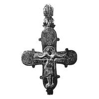

Catalog › CE-1018 · KOR2003-III.1.1.44
Encolpion întreg cu inel, turnare foarte clară cu detalii finisate cu dalta
sec. XII (1101–1200) · Skopți, ținutul și gubernia Pereiaslav, Ucraina
double-sided reliquary cross (enkolpion), aramă; c. XII (1101–1200); found at Skopți, ținutul și gubernia Pereiaslav, Ucraina.


Identificare
- Categorie
- Encolpion bivalv (relicvar)
- Material
- Aramă
- Tehnică
- Turnare în relief; Gravare (incizie); Niello
- Stare
- Întreagă
- Dimensiuni
- Î 155.7 × L 122.5 mm
Iconografie
- Descriere avers
- Encolpion întreg cu inel de agățare. Turnare foarte clară, cu prelucrarea ulterioară a detaliilor cu dalta.
- Inscripții
- МР ΘҮ; НОАНЪ; ГЕОРГН; IC XC/МР ΘҮ; ПАВЛЪ; ПЕТРЪ; [ННК]ОЛА
- Limba
- Slavonă
Datare și atribuire
- Datare
- sec. XII (1101–1200)
- Centru
- Necunoscut
- Tipologie
- Korzukhina–Peskova 2003, tip III 1 1
Descoperire
- Localitate
- Skopți
- Regiune
- ținutul și gubernia Pereiaslav
- Țară
- Ucraina
- Context
- Necunoscut
- Anul
- 1903
Păstrare și referințe
- Nr. inventar
- nr. 870 (Depozitul eparhial Poltava, 1909)
- Bibliografie
- G. F. Korzukhina, A. A. Peskova, Древнерусские энколпионы. Нагрудные кресты-реликварии XI–XIII вв., Sankt-Petersburg, 2003 [Korzukhina–Peskova 2003], p. 107, cat. nr. III 1 1/44, reprodusă la Табл. 49 (planșe, p. 291). Bibliografie citată în sursă: Трипольский 1909, 119, табл. 19, № 810; Варварська, Супруненко 1997, 115–116, рис. 1.
- Figura
- Табл. 49
- Planșe
- Korzukhina–Peskova 2003, Табл. 49 (planșă fără paginație proprie în PDF; p. 291 tipărită)
- Observații
- Datare după Peskova: sec. XII. Circumstanțe: Găsit în 1903 lângă sat, la lucrări de pământ. Proveniență în colecție: în 1909 se afla la Depozitul de antichități eparhial din Poltava, inv. nr. 870; locul actual necunoscut. Dimensiuni: posibil h 11,0 cm fără inelul de agățare, l 9,7 cm. Inscripții adâncite: pe față sub mâinile lui Hristos МР ΘҮ, НОАНЪ, sus ГЕОРГН; pe revers IC XC/МР ΘҮ, ПАВЛЪ, ПЕТРЪ, [ННК]ОЛА. Dimensiunile sunt date ca 15,57×12,25 cm [posibil 11,0 (fără inel)×9,7 cm]. Desen după Tripolski 1909. Inscripții mixte: formule grecești și nume slavone, unele stilizate sau stricate. Coordonate: nu sunt date în sursă.
Citare: Corpus Encolpiorum, CE-1018, Encolpion întreg cu inel, turnare foarte clară cu detalii finisate cu dalta, https://vitaliejosanu1979-ux.github.io/primul-meu-proiect/piese/KOR2003-III.1.1.44/ (accesat 2026-10-17).